비서-1급 (2013-11-10 기출문제)
1과목: 비서실무
1. 다음은 26일부터 3일간 미국 샌프란시스코에서 열리는 Board Meeting에 참석하시는 상사들의 비행기 예약에 관한 비서들의 대화이다. 다음 중 항공 예약업무를 가장 적절하게 한 비서는?
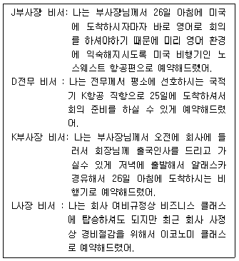
- J부사장 비서
- D전무 비서
- K부사장 비서
- L사장 비서
(정답률: 85%)

2. 다음 중 의전예우에 대한 기준 설명 중 가장 부적절한 것은?
- 공적 고위직 참석자가 소속되어 있는 기관장의 서열에 따라 의전예우의 기준으로 삼는다.
- 공적 지위가 없는 인사의 경우 전직(前職)을 기준으로 삼는다.
- 서로 비슷한 위치의 사람인 경우에는 당사자들간 의견조율을 통하여 예우를 하도록 한다.
- 공적 지위가 없는 인사의 경우 연령 또한 의전예우의 기준으로 고려될 수 있다.
(정답률: 72%)
3. CEO의 이미지 관리자로서 비서가 실행할 수 있는 업무의 내용으로 가장 부적절한 것은?
- 유명 홍보 전문회사에 CEO의 블로그 개설 및 운영을 의뢰하여 일임, 관리되도록 기획한다.
- CEO가 상황, 장소, 시간에 적절한 복장과 외모를 유지할 수 있도록 필요시 조언을 하도록 한다.
- CEO의 대외 스피치 자료와 기고문 등을 저장, 관리하며 사내외 온라인 게시판에 업로딩을 해 놓는다.
- CEO의 사회 참여활동을 보좌하며 관련 정보를 수집, 사내 홍보담당자와 지속적으로 공유한다.
(정답률: 50%)
4. 현진그룹에 근무하는 비서들은 각각 자신의 스트레스를 토로하며 이를 관리하기 위한 노력에 대해 이야기를 나누고 있다. 다음 중 스트레스 관리 태도로 가장 적절한 것은?
- 김 비서 : 퇴근시간이 너무 늦어서 고민이에요. 일주일에 반 이상은 야근이 있어서 너무 피곤하고 낮 시간에 잠이 오고 그래요. 그래서 요즘 커피를 자주 마시면서 피곤을 잊으려고 하고 있어요.
- 정 비서 : 상사께서 자꾸 회계 업무를 주셔서 힘들어요. 잘 모르는 분야라서 다른 분들께 물어보면서 했는데 지난 달부터 퇴근 후 학원에 다니면서 공부하고 있어요.
- 황 비서 : 저는 주로 프로젝트 업무를 많이 하고 있는데, 마감일이 다가와야 효율이 올라서 미루어 두었다가 해요.
- 박 비서 : 입사한지 한 달 밖에 안 된 신입비서가 일이 많이 서툴러서 같이 일하는 게 힘들어요. 그래서 그냥 단순한 업무 위주로 일하도록 배분하고 있어요.
(정답률: 81%)
5. 다음 중 세계전문비서협회에서 공표한 윤리강령의 내용에 포함되지 않는 것은?
- 비서의 계속적인 근무, 급여 그리고 승진에 관련되는 결정은 비서의 전문지식, 능력, 경험, 그리고 업무성과에 따라 보상되어져야 한다.
- 비서는 직장에 있어서 성별, 신조, 나이로 인한 불이익이나 위협의 경우에 항의하여야 하며 필요한 경우에는 해당부처에 알리도록 한다.
- 비서는 비서직과 비서직에 종사하는 사람들의 권위, 지위, 그리고 능력뿐만 아니라 비서직의 표준을 유지, 향상시키기 위하여 노력한다.
- 상사에 대한 충성심과 회사에 대한 애사심을 갖도록 하여 상사의 편에서 자신을 앞세우기보다는 상사가 돋보이 도록 앞세우는 태도를 지닌다.
(정답률: 42%)
6. 여행사 직원과의 전화내용 중 밑줄 친 부분의 설명으로 틀린 것은?
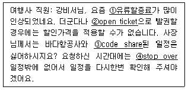
- 유류 할증료: 유가가 비싸졌을 때 유가 상승분을 일정 승객에게 부담하는 것
- open ticket: 귀국 날짜를 구체적으로 정하지 않고 예약 한 항공권
- code share: 항공사간 협정으로 출발편 승객은 갈아탈시 제휴 항공사의 노선을 사용할 수 있도록 하는 것
- stop over: 최종 목적지 도착 이전의 중간 기착지로서 24시간 이내 공항에서 체류함
(정답률: 53%)
7. 런던지사소속 팀장 Ian Poulter란 사람이 한국에 휴가차 입국하며 한국지사를 한번 방문해 보고 싶다고 연락을 해 왔다. 상사는 마침 출장으로 부재 중이며 비서에게 대리 접견을 해 줄 것을 요청하였다. Ian을 맞이하는 비서의 태도로 가장 부적절한 것은?
- 사내 게시판이나 메일을 통하여 런던지사 직원의 방문을 직원들에게 미리 공지한다.
- 한국지사의 기념품을 미리 준비하여 방문시 전달하도록한다.
- 상사가 부재중 이므로 직원회의를 상사 대신 소집하여 서로 인사를 나눌 수 있도록 계획한다.
- 방문한 Ian에게 회사를 안내해 주며 설명해 준다.
(정답률: 72%)
8. 한국지사에 방문한 Ian Poulter가 회의실에서 잠시 자신의 업무수행이 가능한지를 문의한다. 현재는 공실이나 1시간 후 인력관리실의 회의가 재개될 것이며 회의실에는 인력관리실의 회의자료가 책상 위에 놓여있고 화이트보드에는 회의내용이 기재되어 있다. 이에 대한 비서의 대응으로 가장 적절한 것은?
- 인력관리실 소속 회의실 사용자들에게 이후 일정 재확인 및 타인이 잠시 공간이용이 가능한지를 문의해 본다.
- Ian이 회의탁자를 이용할 수 있도록 회의자료들을 임의 로 한 곳으로 정리해 둔다.
- Ian에게 방문 전 미리 예약하지 않았으므로 회의실 사용은 어려우나 필요하다면 현재 부재중인 상사의 집무실을 이용할 수 있도록 전달한다.
- 이후 회의를 위해 화이트보드에 기재된 내용은 일단 깨끗이 지워놓도록 한다.
(정답률: 81%)
9. 직장 내 대인관계 관리를 위한 비서의 자세로서 가장 적절한 것은?
- 사내 여러 집단들을 파악하기 위하여 노조에 가입하여 활동에 적극적으로 참여한다.
- 일반 직원들의 상사의 신상에 대한 궁금증을 일부 답변해 줌으로써 상사와 직원간의 친밀도를 높일 수 있도록 노력한다.
- 사내 비상연락망을 항상 지참하면서 긴급한 정보수집에 관심을 기울인다.
- 비서로서 스트레스를 해소하기 위하여 사내에 고민을 들어줄 수 있는 다수의 멘토를 선택해 둔다.
(정답률: 67%)
10. 김홍철사장은 아시아태평양지역 마케팅 회의에서 한국시장 매출현황 및 마케팅 경영전략에 대해 프레젠테이션을 할 예정이다. 한진영 비서의 준비 업무로 가장 적절치 않은 것은?(10번 공통지문 문제)
- 프레젠테이션 파일을 상사의 노트북에 저장하고 실행하여 문제가 없는지 확인한다.
- 인쇄물 제작용 파일은 준비 시간을 고려하여 인쇄 담당자에게 미리 전송하도록 한다.
- 비상시를 대비하여 호텔 예약 담당자에게 프레젠테이션 파일을 전송하여 보관하도록 한다.
- 발표용 파일은 파워포인트 파일은 물론 관련 동영상, 폰트 파일을 포함하여 호주 지사 담당자에게 미리 보내도록 한다.
(정답률: 74%)
11. 한빛상사의 신입비서인 정서연 비서는 조직과 직무에 신속히 적응하고 비서로서의 직무수행능력을 향상 시키고자 한다. 정 비서가 직무를 통한 자기개발을 하는 방법으로 가장 적절치 않은 것은?
- 문서 작성시 문서의 작성의도와 내용을 이해하고 예상되는 업무처리절차 등을 생각해본다.
- 상사에게 오는 모든 우편물을 개봉하고 정리하며 내용을 이해하고 답변을 연결해 봄으로써 업무의 진행상황을 파악할 수 있다.
- 조직내 문제에 대하여 상사는 어떠한 기준에서 결정을 내리는가를 살펴보고 다양한 각도로 분석해 보는 습관을 키운다.
- 지금까지 계속해오던 방법이나 전임비서의 업무수행 방식에서 벗어나서 생각해보며 새로운 아이디어를 생각해 본다.
(정답률: 69%)
12. 다음은 AC Korea 정태성 사장에게 온 초청장이다. 다음의 행사와 같은 파티 형식에 대한 설명으로 가장 거리가 먼 것은?
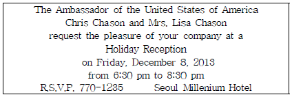
- 주최자와 주빈이 함께 입구에서 손님을 맞으며 이를 리시빙 라인(receiving line)이라고 한다.
- 리시빙 라인의 위치는 문 밖에서 보아 왼쪽이며 순서는 호스트, 호스티스, 주빈, 주빈의 부인 순이다.
- 리시빙 라인 앞쪽에는 안내인이 있어 손님을 호스트에게 안내해 소개한다.
- 주최자의 연설이 있을 경우 참석한 사람들은 대화를 중단하고 인사말을 하는 중앙 무대를 향해 경청하는 것이 예의이다.
(정답률: 56%)
13. 다음은 비서의 회의관련 업무처리의 유의사항을 지적한 것이다. 가장 적절하지 못한 것은?
- 옵서버는 회의의 정식 구성원이 아니므로 회의에 방해가 되지 않도록 구성원의 뒤에 앉게 한다.
- 회의장 구석에 전화를 설치하여 회의 참석자가 회의 중 전화를 받을 수 있도록 한다.
- 음료를 낼 때는 노크 없이 들어가서 프레젠테이션 화면 반대쪽 동선으로 서열 순서에 따라 낸다.
- 비서가 회의 결과와 경과를 기록하는 경우에 녹음기를 이용하여 발언자의 발언내용을 녹음해 두는 것이 편리하다.
(정답률: 72%)
14. 상사의 출장준비를 위한 강은주비서의 관련업무에 대한 설명으로 가장 적절치 않은 것은?(15번 공통지문 문제)
- 여권만료일을 확인하고 비자를 신청하였다.
- 숙박은 이동의 편의성을 고려하여 회의가 열리는 호텔로 예약하였다.
- 프레젠테이션자료를 노트북에 저장하고 만약을 위해 USB에 다시 저장하여 별도로 준비하였다.
- 고액권과 소액권을 섞어 필요한 금액으로 환전하였다.
(정답률: 33%)
15. 비서실에 새로 들어온 후배 비서는 업무도 서툴고 비서업무의 특성상 출퇴근이 불규칙한 부분이나 야근에 곧잘 불만을 노골적으로 토로한다. 선배 비서로서 후배를 조직에 적응시키기 위한 적절한 행동으로 가장 적절치 않은 것은?
- 자신의 경험을 기초로 현실적인 이해를 하도록 한다.
- 업무매뉴얼을 통해 체계적인 지도를 한다.
- 초기에는 서툰 일에 대해 업무를 맡기기 보다는 일상적인 업무를 주로 하게 한다.
- 잘한 일에 대해서는 공개적인 칭찬을 하며 실수에 대해서는 여러 사람의 면전이 아닌 곳에서 주의를 준다.
(정답률: 45%)
16. 다음은 세한전자 김미경 비서가 거래처 임원의 부친상에 조문가는 상사를 위해 준비한 경조금 단자이다. 단자의 올바른 표기법과 가장 거리가 먼 것은?
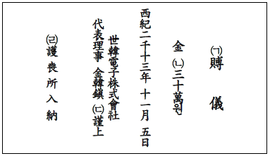
- (ㄱ) 賻儀
- (ㄴ) 三十萬
- (ㄷ) 謹上
- (ㄴ) 護喪所入納
(정답률: 35%)
17. 상사가 단기 해외 출장 중 택시로 이동하는 과정에서 노트북을 분실하게 되었다. 이를 처리하는 과정으로 아래 보기에서 가장 적절하지 않은 것은?
- 택시 영수증을 확인하여 기사나 택시회사의 연락처를 파악, 분실물을 추적해 본다.
- 회사에서 단체가입 된 손해보험 및 여행자 보험의 약관을 확인하여 보상가능 여부를 확인해 본다.
- 상사가 체류하는 숙박시설로 새로운 노트북을 해외특급 우편을 통해 발송하도록 한다.
- 사내 정보관리부서 담당자에게 연락하여 상황을 보고하고 정보보호 및 노트북 관리규정을 확인, 대처한다.
(정답률: 70%)
18. 바쁜 상사들은 은행 관련 업무를 비서가 관리하고 처리하도록 위임하는 경우가 많다. 올바른 은행 업무 방법으로 가장 거리가 먼 것은?
- 신용카드 매출전표와 명세서의 내역 확인이 끝나면 명세서는 폐기해도 된다.
- 대금 지불이 상사 예금 구좌에서 직접 계좌이체 되는 경우 미리 잔고를 확인해 둔다.
- 상사의 소액 현금관리 금전출납부에 반드시 기입하며 영수증은 잘 보관한다.
- 보험료가 미납되지 않도록 티클러 파일이나 B/F 파일을 적절하게 이용하도록 한다.
(정답률: 80%)
2과목: 경영일반
19. 조직의 방향을 설정하는 사명(mission), 전략(strategy), 목표(goal)에 관련된 설명 중 가장 거리가 먼 것은?
- 조직이 근본적으로 달성하고자 하는 바를 사명(mission)이라고 한다.
- 조직이 운영되는 상황에서 사명을 달성하기 위한 현실적인 계획, 즉 전략(strategy)이 필요하다.
- 전략이나 사명과 관련하여 각 팀원들이 달성해야 하는 일들과 이의 달성 기간을 나타내는 개별적이고 운영적인 목표(goals)가 있어야 한다.
- 사명이나 전략은 고정된 것이 아니고 환경이나 상황의 변화를 반영하여 변경되어야 하지만, 목표는 장기적으로 변경되지 않는 것이 좋다.
(정답률: 54%)
20. 다음 중 기업의 경영환경에 대한 설명으로 가장 적절하지 않은 것은?
- 경제환경, 사회환경, 기술환경 등은 기업환경 중 미시적·직접적 환경에 속한다.
- 경영자들이 주목하는 경제적 환경요인으로는 GNP나 GDP 성장률이 기본적인 경제지표로 활용되며, 이자율, 환율, 세율, 생산/투자/고용/소비지표 등이 많이 활용된다.
- 기업내부의 조직문화, 조직의 역사 등도 조직경영에 큰 영향을 미칠 수 있기 때문에 조직내부환경도 환경으로 본다.
- 과업환경은 경영활동에 직접적으로 영향을 미치는 환경요인으로, 고객·공급자·경쟁자 등으로 구성된다.
(정답률: 50%)
21. 다음 중 창업과 관련한 설명으로 가장 적절하지 않은 것은?
- 창업을 하는 이유는 수익, 독립성, 기회, 도전 때문이다.
- 소규모 창업이란 소규모 사업체를 운영하면서 스스로 하고 싶은 일을 하며 일과 삶의 균형을 유지하는 것이다.
- 엔젤 투자자는 기업이 공개되기 전에 사업성 높은 기업에 투자하는 기관 투자자를 말한다.
- 벤처 캐피털리스트는 사업지분의 일부를 받는 조건으로 창업에 필요한 자금을 조달해 주는 개인이나 회사를 말한다.
(정답률: 48%)
22. 다음 중 전자상거래에 대한 설명으로 가장 적절하지 못한 것은?
- 전자상거래는 인터넷을 통해 상품을 사고 팔거나 서비스를 주고받는 시장이다.
- 기업은 전자상거래를 통해 비용을 절감할 뿐만 아니라 신속한 서비스를 제공함으로써 고객만족경영을 추구할 수 있다.
- 전자상거래의 유형 중 B2B는 기업이 소비자를 상대로 거래하는 것이다.
- 전자상거래는 온라인 거래로서 시간의 제약이 없다는 특징이 있다.
(정답률: 74%)
23. 다음중 노사관계와 노동조합에 대한 설명으로 가장 옳지 않은 것은?
- 일반 노동조합(general union)이란 같은 직종이나 같은 직업에 종사하는 노동자가 결성하는 노동조합을 말한다.
- 노사관계는 넓은 범주로는 국가적 수준에 있어서의 노동운동 또는 노동문제까지 포함한다.
- 우리나라는 노동조합의 가입방식 중 오픈 샵(open shop)의 형식을 많이 채택하고 있으며, 이는 노동조합에 가입한 조합원뿐만 아니라 노동조합에 가입하지 않은 노동자도 임의로 채용할 수 있도록 한 제도이다.
- 기업별 노동조합(company union)이란 같은 기업에 종사하는 노동자가 결성하는 노동조합을 말한다.
(정답률: 37%)
24. 다음중 주요 재무비율의 계산식에 대한 설명으로 가장 옳지 않은 것은?
- 당좌비율=당좌자산/유동부채
- 부채비율=부채총액/자기자본
- 이자보상비율=영업이익/지급이자
- 매출채권회전율=매출액/자기자본
(정답률: 33%)
25. 다음중 경영통제 활동에 대한 설명으로 가장 적절하지 않은 것은?
- 기업경영에 있어서 통제활동은 상황에 따라 경영의 모든 프로세스가 대상이 될 수 있다.
- 통제활동은 기준설정, 산출측정, 비교평가의 세 단계를 거친다.
- 인력의 통제는 필요한 자격을 갖춘 인력을 필요한 숫자 만큼 필요한 곳에 공급하는 것을 의미한다.
- 재무자원통제란 회사운영에 들어가는 운영비 지출을 사후에 통제하는 것을 말한다.
(정답률: 46%)
26. 다음 중 기업의 결합 형태에 대한 설명으로 가장 거리가 먼 것은?
- 콤비나트(기업집단)란 법률적으로 독립해 있는 몇 개의 기업이 출자 등을 통한 지배종속관계에 의해 형성되는 기업결합체이다.
- 트러스트(기업합동)란 법률상 뿐 아니라 경영상 내지 실질적으로 완전히 결합된 기업결합 형태로서 일반적으로 거액의 자본을 고정설비에 투하하고 있는 기업의 경우에 이러한 형태가 많다.
- 조인트벤처(공동출자회사)란 자국의 기업이 외국회사와 공동출자하여 회사를 설립하고 외국기술을 도입하여 이익의 획득을 도모하고 손익을 공동 분담하는 형태이다.
- 카르텔(기업연합)이란 동종 또는 유사산업에 속하는 기업들이 독립성을 유지하면서 경쟁을 줄이기 위해 협약하는 형태이다.
(정답률: 36%)
27. 다음 중 기업의 형태에 대한 설명으로 가장 적절하지 않은 것은?
- 합명회사는 유한책임을 지는 사원들로 구성된 회사로, 회사의 채무에 대해서 사원들이 유한책임을 지기 때문에 서로 간에 신뢰와 신용이 전제되어야 한다.
- 합자회사는 사업의 경영은 무한책임사원이 하고, 유한책임사원은 자본을 제공하여 사업에서 생기는 이익의 분배에 참여하는 조직형태이다.
- 유한회사는 사원이 회사에 대하여 출자금액을 한도로 책임을 질 뿐, 회사 채권자에 대하여 아무 책임도 지지 않는 사원으로 구성된 회사이다.
- 합명회사, 합자회사, 유한회사 등은 사원들의 책임 정도에 따라 구분되는 기업형태이다.
(정답률: 49%)
28. 다음중 동기부여 이론에 관한 설명으로 가장 옳지 않은 것은?
- 조직의 관점에서 동기부여는 목표달성을 위한 종업원의 지속적 노력을 효과적으로 발생시키는 것을 의미한다.
- 동기부여가 이루어지는 과정은 대체로 결핍욕구 → 욕구 충족 수단의 모색 → 목표지향적 행위 → 성과 → 보상과 벌 → 종업원에 의해 재평가된 결핍욕구 등이다.
- 허즈버그의 2요인 이론에 따르면 임금수준이 높아지면 직무에 대한 만족도가 높아진다.
- 브룸의 기대이론에 따르면, 유의성은 결과에 대한 개인의 선호도를 나타내는 것으로 동기를 유발시키는 힘 또는 가치를 뜻한다.
(정답률: 40%)
29. 기업의 해외시장 진출에 대한 설명으로 가장 적절하지 않은 것은?
- 해외사업 시 고려해야 할 사항은 문화적, 경제적, 정치적, 법적 특성 등이 있다.
- 해외사업을 할 때에는 해당국가의 문화, 사회적 특징을 존중하고 인정해야 한다.
- 해외사업의 유형에는 해외 아웃소싱, 수출, 라이센싱, 해외직접투자 등이 있다.
- 해외 아웃소싱은 제품이나 서비스 판매 권리를 해외 파트너에게 위양해 주고 일정한 사용료를 받는 방식으로 운영된다.
(정답률: 59%)
30. 채권과 채무를 대등액으로 소멸시키는 것을 상계라 한다.그렇다면 상계권을 행사하는 자가 가지고 있는 채권을 지 칭하는 용어로 옳은 것은?
- 자동채권
- 수동채권
- 금전채권
- 상사채권
(정답률: 20%)
31. 다음 중 사업부제 조직에 대한 설명으로 가장 적절하지 않은 것은?
- 사업부제는 제품별, 지역별 또는 시장별 사업부로 분화되어 형성되는 조직구조이다.
- 사업부제의 이점으로는 의사결정 합리화, 책임체제와 관리책임자의 업적측정의 명확화 등이 있다.
- 단점은 공통비의 증대 및 사업부별 이기주의에 의한 회사 전체의 이익희생 등이 있을 수 있다.
- 사업부제 조직은 신제품 개발, 상품화 계획, 대형 프로젝트 및 플랜트 수주 등과 같은 특정과제 및 목표를 달성하기 위해 창설되며 과제가 달성되면 해산하는 방식을 반복한다.
(정답률: 48%)
32. 다음 의사결정 모형에 대한 설명 중 가장 거리가 먼 것은?
- 상황적응모형에 따르면 의사결정 참여자들 간에 목표 내용에 관한 합의가 먼저 이루어져야 할 경우에 카네기 모형이 적합하다고 하였다.
- 카네기 모형에 따르면 조직 수준의 의사결정은 많은 관리자가 연관되어 있고 최종 선택은 조직의 목표와 문제의 우선순위에 대해 합의하는 관리자들의 협력체로서의 연합에 기초한다고 주장했다.
- 쓰레기통 모형은 의사결정 과정에 참여하는 구성원들의 유동성이 심할 때의 의사결정 유형이다.
- 카네기 모형은 문제가 정형화된 경우 조직이 토의와 협상과정을 통해 문제를 해결하는 것이 효율적이라고 하였다.
(정답률: 19%)
33. 다음 중 마케팅활동에서 주로 사용되는 STP(Segmentation, Targeting, Positioning)전략에 관한 설명으로 가장 적절하지 않은 것은?
- 성공적인 포지셔닝으로 생기는 제품포지션은 표적시장으로 삼은 세분시장에서 그 제품이 갖는 절대적 위치라고할 수 있다.
- 기업은 미래의 수요예측을 통해서 제품이 진입해야 할 시장을 특성에 따라 나누는 시장세분화를 해야 한다.
- 세분시장의 매력도, 세분시장에서 가질 수 있는 경쟁우위, 기업의 마케팅 활동과 기업문화와의 적합성은 표적 시장 선정에 고려되는 중요한 기준이다.
- 표적시장 선정과 포지셔닝을 통해 표적시장에 적합한 마케팅 믹스를 개발할 수 있다.
(정답률: 45%)
34. 다음 중 자유무역협정(FTA)에 대한 설명으로 가장 적절하지 않은 것은?
- 자유 무역 협정(FTA: Free Trade Agreement)은 둘 또는 그 이상의 나라들이 상호간에 수출입 관세와 시장점유율 제한 등의 무역 장벽을 제거하기로 약정하는 조약이다.
- 국가 간의 자유로운 무역을 위해 무역 장벽, 즉 관세 등의 여러 보호 장벽을 철폐하는 것이다.
- 자유로운 상품거래와 교류가 가능하다는 장점이 있으나 자국의 취약산업의 붕괴 우려 및 많은 자본을 보유한 국가가 상대 나라의 문화까지 좌지우지 할 수 있다는 점에서 논란의 여지가 있다.
- 상호간 관세는 폐지하며, 협정국 외의 다른 나라에 대한 관세도 동일하게 설정해야 하므로 관세 동맹과 유사한 협정이다.
(정답률: 47%)
35. 전략 경영의 과정 및 유형에 대한 설명으로 가장 거리가 먼 것은?
- 시장침투(market penetration) 전략은 기존제품을 새로운 시장에 출시하여 시장점유율을 증대시키려는 전략이다.
- SWOT 분석은 외부환경의 기회 및 위협 요소와 내부자원의 강점 및 약점을 파악하여 기업의 전략을 수립하기 위해 사용한다.
- 전략통제란 기대되는 성과와 실현된 성과를 비교하고 목적에서 이탈된 부분을 수정하는 전략 경영의 과정이다.
- 제품 포트폴리오 전략은 기업이 취급하는 여러 사업을 전략 단위로 파악하여 사업단위별로 성장시킬 것인지 혹은 포기할 것인지를 파악하기 위한 경영전략의 유형이다.
(정답률: 30%)
36. 최근 지식자산의 중요성이 강조되어 지식경영이 기업경영의 중요한 관심이 되고 있다. 다음 중 지식경영에 대한 설명으로 가장 적절한 것은?
- 지식경영은 형식적 지식을 기업 구성원에게 구체화시킬수 있는 암묵적 지식으로 전환하여 지식자산을 공유시키는 경영방식이다.
- 지식전환 중 표출화과정은 형식지에서 형식지로 지식을 변화하는 과정으로 문서나 데이터베이스에 있는 내용을 학습하는 것이 이에 해당된다.
- 지식을 외부에서 획득하는 수단으로는 구매, 전략적 제휴, 아웃소싱, 벤치마킹 등이 있다.
- CFO는 기업의 지식경영을 총 책임지는 최고위급 경영자로서 지식경영을 위한 정보기술적 인프라를 만드는 역할을 한다.
(정답률: 40%)
37. 전자결제의 유형별 장단점에 대한 설명 중 가장 옳지 않은 것은?
- 온라인 자금이체는 금융기관 측면에서 시스템 구축이 용이하다는 장점이 있다.
- 신용카드는 금융기관 측면에서 시스템 구축이 용이하다는 장점이 있다.
- 전자수표는 정부 측면에서 무자료거래 등 탈루소득을 방지한다는 장점이 있다.
- 전자화폐는 인식부족에 의한 단기적 활용도 저하로 수요감소 가능성이 있다.
(정답률: 19%)
38. 금융기관 간에 영업활동 과정에서 남거나 모자라는 자금을 30일 이내의 초단기로 빌려주고 받는 경우에 적용되는 금리를 무엇이라 하는가?
- CD금리
- 콜금리
- 리보금리
- 국공채 금리
(정답률: 37%)
3과목: 사무영어
39. Which of the following sets is the most appropriate for the blank ⓐ,ⓑ,ⓒ and ⓓ? (순서대로 ⓐ, ⓑ, ⓒ, ⓓ)
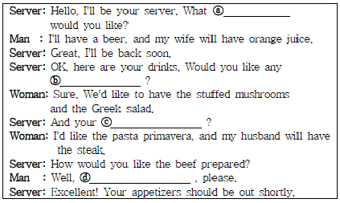
- beverages - entreˈte - appetizers - rare
- beverages - entreˈte - desert - appetizers
- beverages - appetizers - entreˈte - medium well
- beverages - desert - entreˈte - medium rare
(정답률: 50%)
40. Read four sets of dialogues and choose one which does not match each other.
- A: I'm looking for Mr. Simpson's office. I was told that it is on this floor.
B: I'm sorry, but his office moved to the third floor. - A: Could you tell me where the restroom is?
B: Turn right at the end of the hall, you can't miss it. - A: Mr. Jacobs is expecting you in his office.
B: I'm not sure whether I can reach his expectation or not. - A: May I ask the nature of your visit?
B: I'd like to show Mr. Carter our new products.
(정답률: 42%)
41. Read the dialogue below and choose one which is not true.
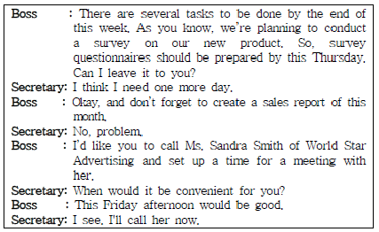
- A boss is going to create a sales report by this week.
- A secretary will finish preparing survey questionnaires by this Friday.
- A Secretary will call Ms. Smith to make an appointment.
- A Boss would like to meet Ms. Smith on this Friday afternoon.
(정답률: 47%)
42. Read the conversation below and choose one which is not true.
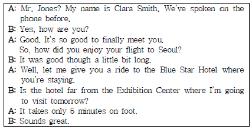
- Mr. Jones came to Seoul by airplane.
- Clara Smith works for the Blue Star Hotel.
- Mr. Jones and Clara Smith have never met before this meeting.
- Mr. Jones is going to stay at the hotel near the Exhibition Center.
(정답률: 49%)
43. What kind of letter is this?
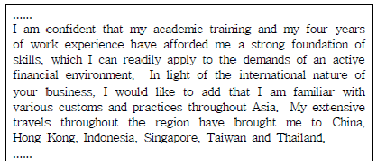
- letter of credit
- notice of position change
- cover letter
- letter for recommendation
(정답률: 40%)
44. Choose the correct inside address in a business letter.(오류 신고가 접수된 문제입니다. 반드시 정답과 해설을 확인하시기 바랍니다.)
- Ms. Christina Anderson
Swany Hotel
Managing Director
9 Hill Street
Albany, NY 20221 - Ms. Christina Anderson/Managing Director
Swany Hotel
9 Hill Street
Albany, NY 20221 - Dear Ms. Christina Anderson
9 Hill Street
Albany, NY 20221
Swany Hotel
Managing Director - Ms. Christina Anderson
Managing Director
Swany Hotel
9 Hill Street
Albany, NY 20221
(정답률: 15%)
45. Belows are sets of Korean sentence translated into English. Choose one which matches not correctly each other.
- 샌프란시스코에는 정시에 도착하나요? - Will we reach at San Francisco on time?
- 회의할 때 그의 제안에는 누구도 반대하지 않았습니다. - His proposal was opposed by no one at the meeting.
- 가끔은 버스로 공항에 가는 게 더 빠를 때도 있어요. - It's sometimes faster to go to the airport by bus.
- 연수받으러 가서 새로운 소프트웨어 활용법을 배웠어요. - At the workshop, I learned how to use the new software.
(정답률: 26%)
46. Read the message and choose one which has the wrong explanation on the underlined words or phrases in the text.
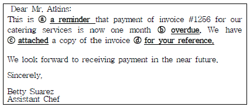
- ⓐ a reminder: something that helps you to remember something
- ⓑ overdue: late
- ⓒ attached: sent with the letter
- ⓓ for your reference: for you to recommend
(정답률: 30%)
47. Choose one which does not explain its meaning correctly.
- attendee - a person who attends or is to present at a meeting.
- handouts - something given or distributed free to those in need. It can refer to materials handed out for presentation.
- session - a formal meeting or series of meetings of an organization.
- agreement - a suspension of proceedings to another time or place.
(정답률: 40%)
48. Which of the followings is the most appropriate expression for the blank?
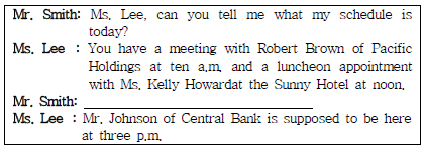
- What should I do first?
- I've already done it.
- Can you cover for me?
- Anything else?
(정답률: 53%)
49. According to the conversation below, which of the followings is not true?
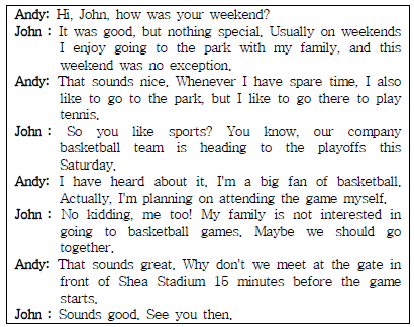
- Both men have a plan to go to the game this weekend.
- John goes to the park with his family on weekends.
- Two men are talking about their weekend plans.
- Andy goes to the park to play tennis on weekends.
(정답률: 44%)
50. Read the letter and answer the questions. Who wrote this letter?
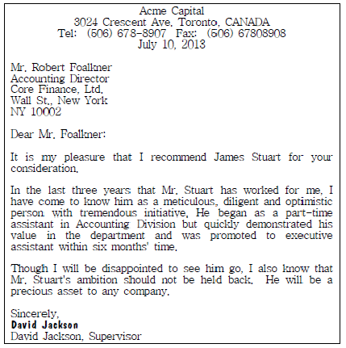
- A Director at Core Finance
- Mr. Stuart's previous boss
- Mr. Foalkner's supervisor
- An executive assistant of Acme Capital
(정답률: 45%)
51. Read the e-mail below and choose one which is not true.
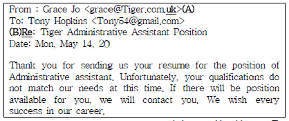
- (A) uk is a country code used in e-mail address. The letters uk mean United Kingdom
- (B) Re is an abbreviation of 'Regarding' in e-mail.
- This letter is about rejecting an applicant who applied for an administrative position
- Tony Hopkins has enough qualifications to get hired for an administrative position.
(정답률: 53%)
52. Below is a schedule of Ms. Emma Lane of Healthy & Yummy. Choose one which is not true to the schedule.
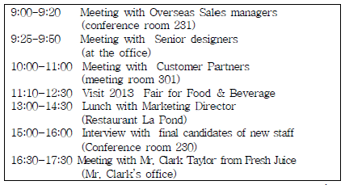
- Ms. Lane is supposed to visit Mr. Clark's Office in the afternoon.
- Ms. Lane has three meetings in a row in the morning.
- Ms. Lane will visit 2013 Fair for Food & Beverage before lunch.
- Ms. Lane is going to have a lunch with a new staff at Restaurant La Pond.
(정답률: 49%)
53. Which of the followings is the most appropriate expression for blanks (A) to (D)? (순서대로 (A), (B), (C), (D))
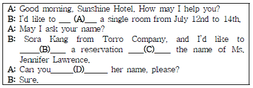
- book - make - under - spell
- book - have - on - check
- reserve - make - on - check
- reserve - have - under - spell
(정답률: 38%)
54. Read the following message left on the answering machine and answer the question. Why does Edward parker leave the above message on the machine?
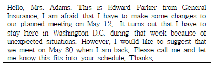
- To reschedule an appointment
- To make a business proposal
- To request information
- To invite Mrs. Adams to Washington D.C.
(정답률: 46%)
55. Which of the followings is the most appropriate expression for the blank?
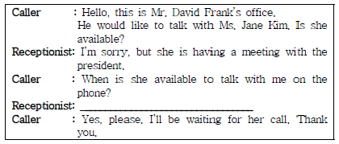
- Would you give her a call after the meeting?
- I'll have her return your call as soon as she finishes her meeting.
- I'll transfer your call right now.
- Please don't hang up since she is not available today.
(정답률: 48%)
56. According to the dialogue below, which of the followings is true?
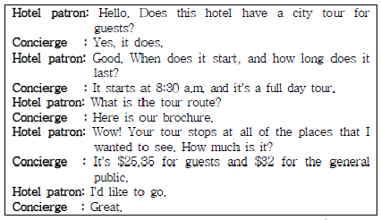
- The patron has to pay $32 for the hotel city tour.
- The hotel offers a city tour service only in the morning.
- The patron is not willing to join the city tour.
- The concierge explains the tour route to the guest by showing her the brochure.
(정답률: 40%)
57. Choose one which does not match each other.
- T/C : Traveller's Check (여행자 수표)
- CIO : Chief Information Officer (최고경영자)
- BOD : Board of Directors (이사회)
- APEC : Asia-Pacific Economic Cooperation (아시아ㆍ태평양 경제협력체)
(정답률: 50%)
58. Look at the following visual aids. Which of the followings is the most appropriate. graph describing for the direction in the box below?
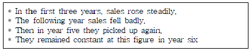
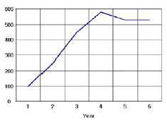
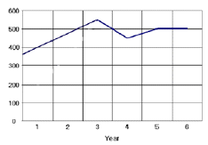
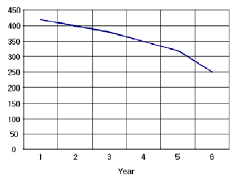
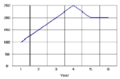
(정답률: 51%)
4과목: 사무정보관리
59. 김비서는 다음 달에 있을 신제품 발표회 참석 대상 300명에게 초청장을 보내고자 한다. 다음 중 김비서의 행동으로 가장 옳지 않은 것은?
- 김비서는 편지병합 기능을 사용하여 참석대상자에게 보낼 초청장을 만들기로 하였다.
- 초청장에 필요한 정보가 엑셀에 저장되어 있는 초청자는 해당 파일을 사용하기로 하였으며, 자료가 없는 초청자는 새로 데이터 파일을 만들기로 하였다.
- 자료가 없는 초청자가 20명이어서 김비서는 새로운 데이터 파일에 20개의 필드와 3개의 레코드를 가진 데이터베이스 파일을 만들기로 하였다.
- 초청장을 보낼 편지봉투에 붙이기 위해 김비서는 데이터와 라벨 용지를 사용하여 라벨링 작업을 하기로 하였다.
(정답률: 48%)
60. 상사는 어린이날을 맞아 초등학생 자녀를 둔 직원들의 집으로 1만 원권 문화상품권 3매를 우편으로 보내라고 강비서에게 지시하였다. 이 경우 강비서가 사용하기에 가장 적합한 우편제도는 무엇인가?
- 배달증명
- 유가증권 등기
- 통화등기
- 특급우편
(정답률: 22%)
61. 전자문서의 작성방법으로 가장 잘못된 것은?
- 시행문의 발신명의표시의 마지막 글자 위에 서명은 전자 이미지 서명으로 대체한다.
- 전자문서에서 사용하는 전자이미지서명은 기관 내에서 등록한 후 사용한다.
- 전자문서에는 문서등록번호를 생략하고 발송할 수 있다.
- 전자관인을 위조 또는 부정 사용하지 못하도록 필요한 안전장치를 한다.
(정답률: 56%)
62. 다음 전자 우편 주소 secretary@korcham.go.kr에서 도메인 이름에 해당하는 것은 무엇인가?
- secretary
- korcham
- korcham.go.kr
- secretary@korcham.go.kr
(정답률: 43%)
63. 김비서는 상사로부터 받은 거래처 직원의 명함을 정리하려고 한다. 성명으로 정리했을 때와 회사명으로 정리했을 때 바람직한 순서로 짝지어진 것은?
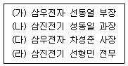
- 성명순 : (가)-(라)-(나)-(다), 회사명순 : (가)-(다)-(라)-(나)
- 성명순 : (가)-(라)-(나)-(다), 회사명순 : (다)-(가)-(라)-(나)
- 성명순 : (가)-(나)-(라)-(다), 회사명순 : (가)-(다)-(라)-(나)
- 성명순 : (가)-(나)-(라)-(다), 회사명순 : (다)-(가)-(라)-(나)
(정답률: 25%)
64. 다음 문서중 공문서로서 가장 적절하지 않은 것은?
- '국가고용률 70%달성'에 대해 교육부에서 작성한 국정 과제 기본계획
- '전문대학 육성방안'에 대해 교육부 홍보담당관실에서 배포된 보도자료
- '국가직무능력표준 개발 및 활용 연수 개최 알림'을 작성한 교육부 인재직무능력정책과의 연수 협조문
- '전문대학 육성방안 상세자료'에 대한 한국대학교 부총장의 대한일보 기사
(정답률: 52%)
65. 다음 중 이비서의 문서관리에 관한 설명으로 가장 적절하지 못한 것은?
- 문서는 내용에 따라 그 처리기간이나 방법이 동일하게 적용되며, 효율적인 업무수행을 위하여 당일처리를 원칙으로 한다.
- 문서는 정해진 사무분장에 따라 각자가 직무의 범위 내에서 책임을 가지고 관계규정에 따라 신속, 정확하게 처리한다.
- 문서는 법령의 규정에 따라 일정한 형식 및 요건을 갖추어야 하고, 권한 있는 자에 의하여 작성, 처리되어야 한다.
- 문서관리 업무는 문서작성, 배포, 접수, 보관 등 여러 가지가 있고, 이 중 특정 사무에 담당자를 정하여 전담하게 하여 전문성을 높일 수 있다.
(정답률: 46%)
66. 김비서는 수신된 우편물의 내용을 읽고 아래와 같은 회사이름으로 주제표시 된 편지를 문서정리하려고 한다. 파일링 순서를 바르게 나열한 것은?
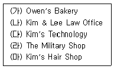
- (마) - (다) - (나) - (가) - (라)
- (마) - (다) - (나) - (라) - (가)
- (나) - (마) - (다) - (가) - (라)
- (나) - (마) - (다) - (라) - (가)
(정답률: 14%)
67. 다음 중 사무실내 바람직한 조명 유지 관리를 위한 방법을 모두 고르시오.
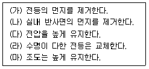
- (가), (나), (라)
- (가), (라), (마)
- (가), (나), (다), (마)
- (다), (라), (마)
(정답률: 54%)
68. 다음 중 전자문서관리시스템(EDMS)의 특징에 대한 설명으로 가장 옳지 않은 것은?
- EDMS는 Electronic Document Management System의 약자로 문서양식을 단순화시키고 문서작성과 유통을 표준화시킨다.
- 문서 작성 뿐 아니라 화상회의도 가능하게 하여 빠른 의견 조율이 가능하다.
- 종이문서 보관장소의 획기적인 절감으로 쾌적한 사무환경 조성이 가능하다.
- 저장된 결재 문서를 다시 불러내어 재가공할 수 있어 문서 재작성의 번거로움을 줄여 준다.
(정답률: 62%)
69. 다음은 대한기업의 2012년도 대차대조표이다. 아래의 표에 서 재고자산의 구성비율을 그래프로 표현하려고 할 때 가장 적합한 그래프의 형태는?
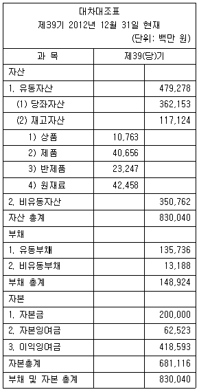
- 막대형 그래프
- 혼합형 그래프
- 방사형 그래프
- 원형 그래프
(정답률: 47%)
70. 다음 중 우편물 수신시 일부인(date stamp)에 대한 설명으로 가장 옳지 않은 것은?
- 우편물 접수시 봉투 여백에 접수 일부인을 찍어 접수일자와 시간을 기록한다.
- 일부인을 찍는 이유는 차후에 수신날짜에 대한 참조로 사용하기 위해서다.
- 일부인을 찍어 두면 우편 사정으로 연착했을 경우 해명이 가능하다.
- 일부인을 찍어 두면 너무 미뤄두지 않고 회신을 빨리 쓰게 되는 장점이 있다.
(정답률: 18%)
71. 다음 중 같은 속성을 가진 사무기기로 짝지어지지 않은 것은?
- 마이크로 피시 - DVD - 웹스토리지 시스템
- 전자우편 - 팩시밀리 - 인스턴스 메시징
- xDSL - 인트라넷 - VAN
- 스캐너 - USB드라이브 - 터치패드
(정답률: 47%)
72. 프레젠테이션 준비 또는 진행시에 고려할 사항과 가장 거리가 먼 것은?
- 프레젠테이션의 목적이 정보전달인지, 설득인지, 즐거움을 주기 위한 것인지 분석한다.
- 청중의 규모, 성별, 지식수준, 연령 등을 파악한다.
- 프레젠테이션 장소의 좌석 배치와 사용가능한 기자재 등을 파악한다.
- 프레젠테이션 시 사전에 준비한 원고를 완벽하게 외워그대로 진행한다.
(정답률: 69%)
73. 다음 중 공문서작성에 대한 설명이 가장 적절하지 못한 것은?
- 공문서나 유가 증권 등에 금액을 표시할 때에는 숫자로 표기하고 그 옆에 괄호를 넣어 한글로 표기한다.
- 원화를 나타내는 ₩기호와 숫자 사이, 또는 한글로 표기한 금액의 바로 뒤에나 중간에 숫자나 글자를 삽입할 수 있는 공간을 마련해둔다.
- 전후관계를 명백히 해야 할 필요가 있는 중요한 문서가 2장 이상으로 이루어진 때에는 면표시를 하고, 양면에 내용이 있는 문서는 양면 모두에 면표시를 한다.
- 공문서의 본문이 끝났을 경우 1자(2타)를 띄우고“끝.”이라고 표시한다.
(정답률: 48%)
74. 다음의 인터넷 주소에 대한 설명으로 틀린 것은?
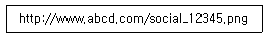
- 프로토콜로는 html이 사용되었다.
- 인터넷 상의 프로토콜, 컴퓨터 주소, 파일이름으로 구성되어 있는 URL이다.
- 회사나 상업 목적의 기관에서 사용하는 주소임을 알 수 있다.
- 이 주소를 통해 얻을 수 있는 자원은 social_12345.png 라는 그림파일이다.
(정답률: 34%)
75. 정비서는 다음 주 사내 프레젠테이션 경진대회를 앞두고 심사위원에게 배부할 자료집을 만들고 있다. 자료집 제작을 위해서 정비서가 사용하는 사무기기로 가장 적절한 것은 무엇인가?
- DTP - 문서제본기
- OHP - 플로터
- PDA - 스캐너
- 태블릿 컴퓨터 - 문서세단기
(정답률: 47%)
76. 정보수집과 관련하여 윤비서의 행동으로 가장 적절하지 않은 것은?
- 상사와 관련 있는 경조사, 인사동정란을 살핀다.
- 중요한 기사자료는 그 자리에서 복사해 분류기준에 따라 파일링한다.
- 상사가 요청한 기사를 스크랩해둔다.
- 신문 1종을 선별하여 전체를 스크랩한다.
(정답률: 62%)
77. 최근에는 모바일 청첩장과 뉴스속보, 무료쿠폰 등을 문자메시지로 전달하여 돈을 빼내는 사건이 자주 발생하고 있다. 문자를 받은 사람이 문자메시지에 링크된 주소를 클릭하는 순간 악성코드가 심어지면서 소액결제가 이뤄지는 것인데 이것을 무엇이라고 하는가?
- 보이스피싱
- 파밍
- 스미싱
- 해킹
(정답률: 55%)
78. 아웃도어 업체 대표이사 비서인 신비서는 다음의 기사를 상사에게 요약 보고하여야 한다. 다음 중 가장 적절하지 않은 것은?
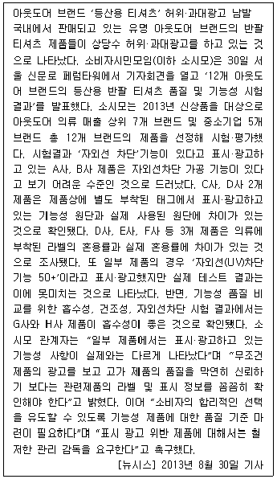
- A사와 B사 제품은 자외선 차단 효과가 낮고, C사와 D사는 태그에 표시된 원단과 실제 원단이 달랐다.
- 소비자시민모임은 '12개 아웃도어 브랜드의 등산용 반팔 티셔츠 품질 및 기능성 시험 결과'를 발표했다.
- G사와 H사 제품은 흡수성이 좋은 것으로 확인됐다.
- 거의 모든 제품에서 표시·광고하고 있는 기능성 사항이 실제와는 다르게 나타났다.
(정답률: 56%)